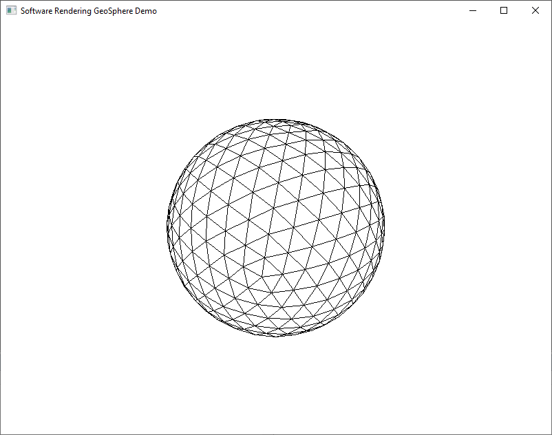

Загрузить архив с примерами ЗДЕСЬ.
В этом примере используется расчет количества вершин и индексов геосферы, затем создаются динамические массивы вершин и индексов. Код примера можно загрузить /src/01.026-draw_geosphere/Build_GeoSphere_1.
В этом примере используется класс динамического массива с использованием шаблонов. На базе шаблонного класса создаются массивы вершин и индексов. Код примера можно загрузить /src/01.026-draw_geosphere/Build_GeoSphere_2.
В чем геосфера отличается от обычной сферы, которую строят при помощи параметрического уравнения сферы? У сферы которую строят при помощи параметрического уравнения треугольники разного размера. У геосферы треугольники все имеют одинаковый размер. Как строится геосфера. Береться готовая модель икосаэдра, она состоит из 12 вершин, и 20 треугольников. Потом в один (несколько) проходов каждый треугольник икосаэдра разбивается - то есть грани (стороны) каждого треугольника разбиваются пополам - и в результате в этом треугольнике получаем внутри еще один треугольник. В итоге разбиения треугольников (это называется тесселяцией) из одного треугольника получаем четыре треугольника, после того как каждую сторону одного треугольника разбили пополам. Разбиение одного треугольника на несколько называется тесселяцией.
Разбиение треугольника икосаэдра показано на схеме ниже.
v1 * / \ / \ m0*-----*m1 / \ / \ / \ / \ *-----*-----* v0 m2 v2